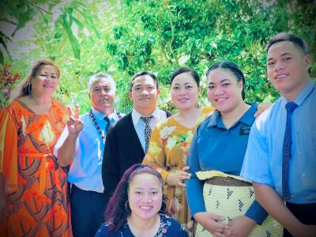

Our Family of Ten
Our family has ten members five girls and five boys.
Eight of us have already served a mission, and the ninth
will finish his mission this coming November. The youngest
in our family is still waiting for his mission call.
Serving the Lord has always been our family’s promise
to our parents, and it is one of our greatest goals
in life.
Global Mission Service
We all served our missions in different countries around the world.
Four of us served in our homeland, Tonga, one in Vanuatu, two in New
Zealand, one in the Philippines, and one in Australia. Even though
we were far from each other, our purpose was the same—to serve the
Lord and help others come unto Christ.
Education at BYU–Hawaii
Three of us are studying here at Brigham Young University–Hawaii.
Our oldest sister graduated from BYU–Hawaii in 2010, and my other
sister and I are still here continuing our education. We are grateful
for this opportunity to learn, grow, and prepare for our future.